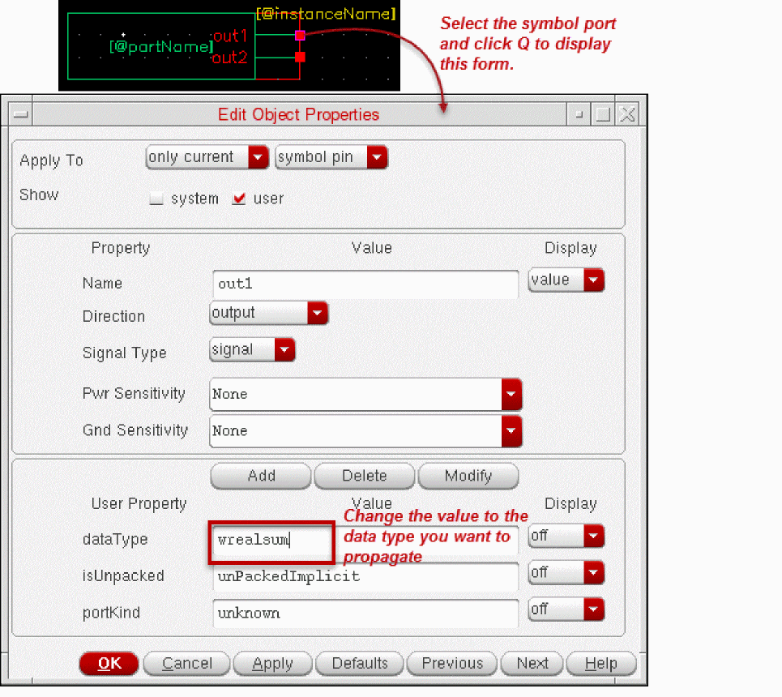

B
Examples
This appendix contains the following examples.
- Overriding Hierarchical Data Type Propagation in a Design
- Resolving Data Type Conflict
- Netlisting a Design Containing Packed and Unpacked Arrays
Overriding Hierarchical Data Type Propagation in a Design
You can override the data type propagation from a port of a SystemVerilog cellview in a hierarchical upwards fashion. For this override, change the value of the dataType property of that port in the place master, also refered to as the symbol, of the cellview to the data type you want to propagate. For details, see “Overriding Hierarchical Data Type Propagation”.
vlogIfSVEnableDataTypeOverRiding to nil.
As illustrated in the following figure, a top-level schematic contains instances of the SystemVerilog cellviews sub1 and sub11. These cellviews have wreal ports.
When you generate the netlist of the top-level schematic, the wreal data type is propagated to the output ports of the schematic, which are out1, out2, and out3. The netlist is illustrated below. The bold text illustrates the wreal propagation.
|
You can override the wreal data type propagation with the wrealsum data type to add the signals sub1.out1 and sub11.out1 in the top module. To achieve this, perform the following steps:
-
Open the
sub1symbol in Virtuoso Symbol Editor. -
Select the port that represents
out1and press Q to display the Edit Object Properties form of that port. See the following image.
 -
Change the value of the
dataTypeproperty fromwrealtowrealsum. - Click OK.
- Click Check and Save on the Virtuoso Symbol Editor toolbar. You can then close the editor.
-
Open the
sub11symbol in Virtuoso Symbol Editor. Then perform step 2 to step 5 to change thedataTypeproperty value of the symbol portout1towrealsum. - Open the top-level schematic that contains the updated symbols.
-
Generate the SystemVerilog netlist of the design. In this netlist, the data type
wrealis overridden bywrealsum, as required.
The netlist where the data type is overridden is illustrated below. The bold text indicates the data type override.
|
Resolving Data Type Conflict
SystemVerilog Integration Environment can encounter conflicts when propagating data type. For details, see “Managing Data Type Conflicts”.
It is possible that two instances connected to a port have different SystemVerilog data types. For example, in the following design, the top-level schematic contains instances of the SystemVerilog cellviews sub1 and sub11. Cellview sub1 has wreal ports. Cellview sub11 has port out1 of the data type wrealsum, and port out2 of the data type wreal.
out1 (wreal) of sub1 and port out1 (wrealsum) of sub11 are connected to the same output port out1.
When you generate the netlist of the illustrated design, SystemVerilog Integration Environment encounters a conflict when propagating the data type to the output port out1 because the connected ports have different data types.
By default, the SystemVerilog Integration Environment does not propagate the data type to the output port in case of a type mismatch. However, you can set the hnlSVSetDefaultTypeOnTypeConflict flag to t to propagate the default data type when there is data type conflict.
Alternately, you can also set a custom conflict resolution mechanism to determine which data type must be propagated. For this, define the function hnlSVResolveDataTypeConflict as required and load it. For example, you can define and load the function through the simulation run control file .simrc. The return value of this function must be list(isRefPort portKind dataType isUnpacked).
The following example procedure stored in .simrc instructs SystemVerilog Integration Environment to propagate the data type wrealsum when a data type conflict is encountered.
When you generate the netlist of the design after setting the data type conflict mechanism, SystemVerilog Integration Environment propagates the required data type. It generates the following netlist for the schematic example illustrated in this section. The bold text highlights the data type propagation as a result of the defined conflict resolution mechanism.
module top ( output wrealsum out1, output wreal out2 , output wreal out3 ); sub1 I3 ( out1, out2); endmodul |
If the conflict resolution mechanism was not set, SystemVerilog Integration Environment would generate the following netlist, where no data type is propagated to the output port out1.
|
Netlisting a Design Containing Packed and Unpacked Arrays
SystemVerilog Integration Environment supports the netlisting of designs with ports of the type packed array or unpacked array. Consider a design library test that contains the following SystemVerilog definition of module packed_unpacked_data.
|
In this module, the port packed_array is declared as a packed array of default type logic. The port unpacked_array is declared as an unpacked array of type real.
The symbol of the SystemVerilog cellview packed_unpacked_data is instantiated as I0 in the schematic mid, as illustrated below.
When you generate the netlist of the schematic, SystemVerilog Integration Environment processes the design appropriately and generates the following netlist.
|
Consider the following schematic mid1, where two instances of the symbol of packed_unpacked_data are instantiated as I0 and I1. Note the pins A, B, C, and D.
When you generate the netlist of this schematic, SystemVerilog Integration Environment processes the design appropriately and generates the following netlist.
If the flag vlogPrintAssignForUnpacked is set to t and SystemVerilog Integration Environment is restarted, the assign statements for the unpacked arrays are printed, as illustrated in the following netlist.
Return to top